تطبيق مجّاني لتلاميذ المتوسط، من السنة الأولى إلى الرابعة، مرتبط صفحةً بصفحة بكتب «الجامع».
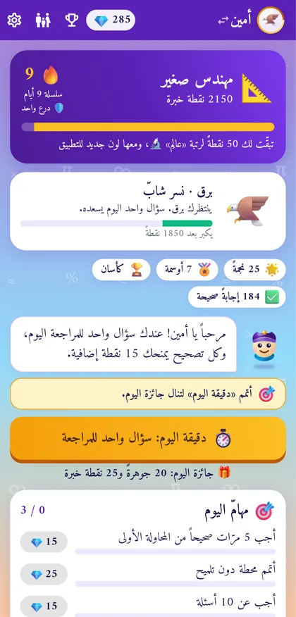
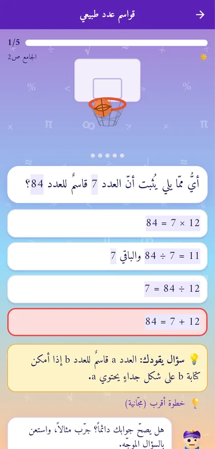
عالم لكل مقطع من دروس المتوسط الجزائري، ومحطات، ووضعية إدماجية في آخر كل عالم.
بعد الخطأ يأتي سؤالٌ موجِّه على الطريقة السقراطية، ثم خطوة أقرب، ثم حلٌّ مفصّل وصفحة الدرس في الكتاب.
من بيضة إلى نسر ملكي: يكبر رفيقه كلّما تعلّم، ويحفّزه دون ضغط ولا عقاب.
60 ثانية حساب ذهني لتحطيم الرقم القياسي، وسؤال مراجعة يومي يعود بما أخطأ فيه.
لتلاميذ الرابعة متوسط: اختبار بمؤقّت وعلامة على 20، مثل يوم الامتحان.
حتى 6 ملفّات، لكل ابن سنته وتقدّمه، وصفحة أولياء تلخّص أسبوعه بهدوء.
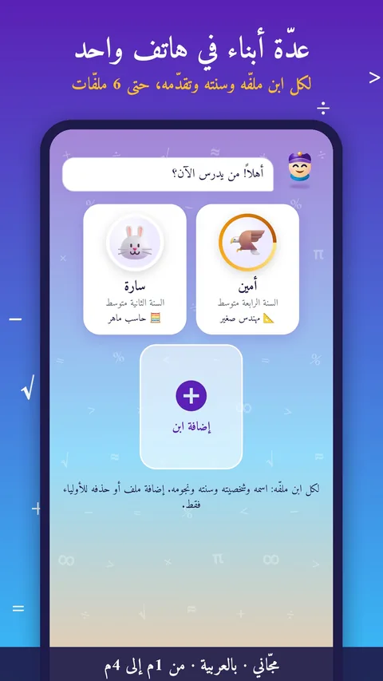
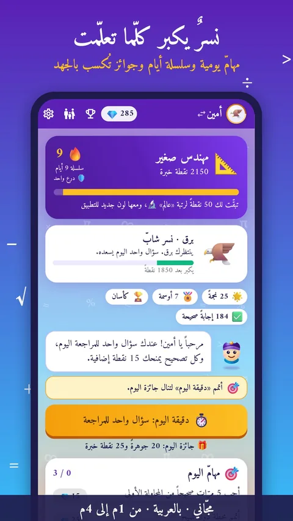
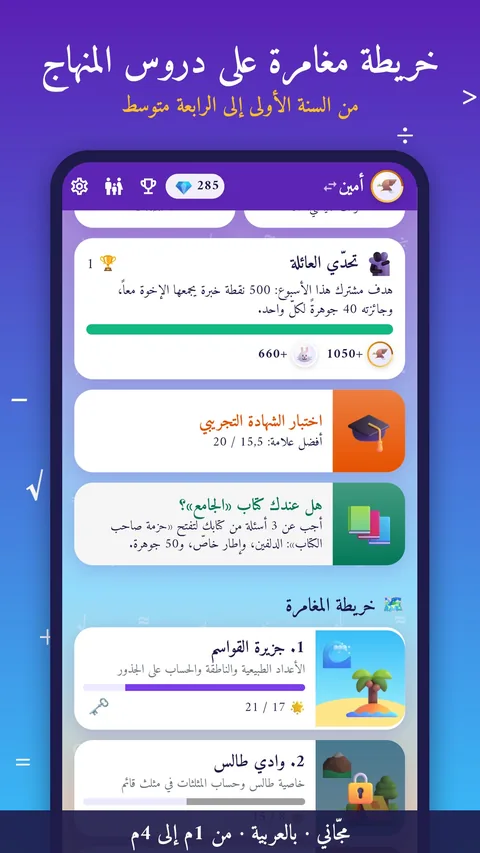
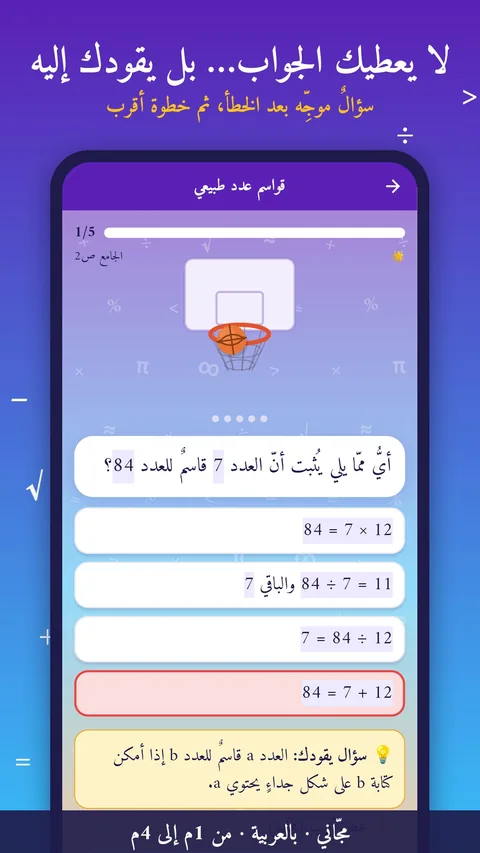
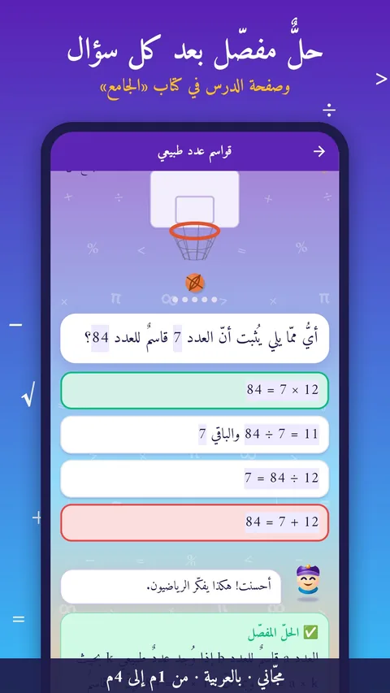
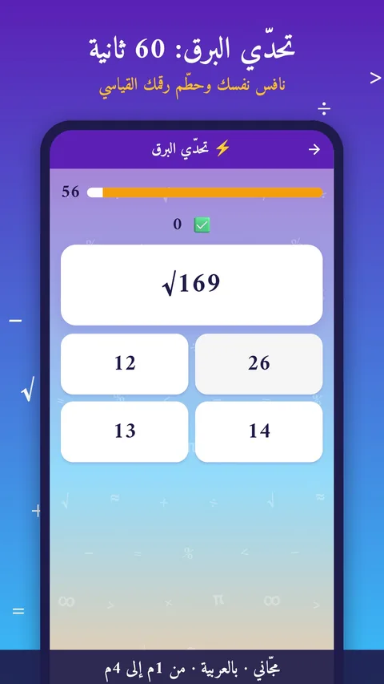
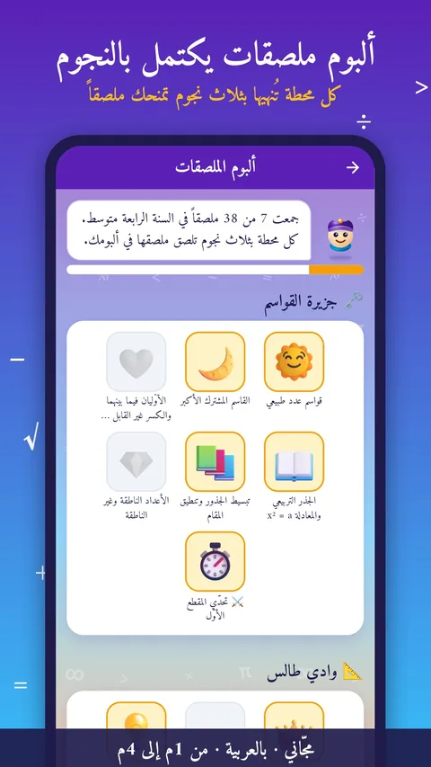
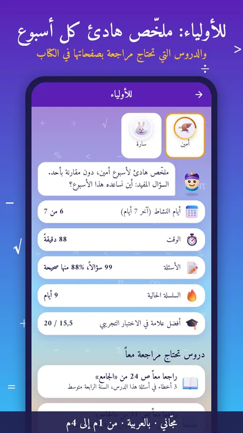
بصراحة عن الإعلانات: ليبقى التطبيق مجّانياً، يعرض إعلانات قليلة من Google مضبوطة للأطفال: غير مخصّصة، ومحتوى «لكل الأعمار»، ومكتومة الصوت دائماً، مع حظر فئات القمار والمواعدة والقروض والتنجيم وغيرها. لا إعلان عند الفتح ولا أثناء سؤال أو حلّ؛ وإعلان المكافأة باختيار التلميذ فقط، وكل ما يُكسب به يُكسب بالجهد أيضاً. التفاصيل في سياسة الخصوصية.
لكل سنة كتابان، وكلّ كتاب «3 في 1». في الرابعة متوسط: مواضيع مقترحة لشهادة التعليم المتوسط.
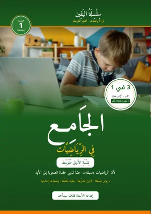
الجامع في الرياضياتالسنة الأولى متوسط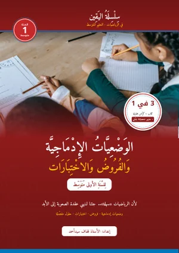
الوضعيات الإدماجية والفروض والاختباراتالسنة الأولى متوسط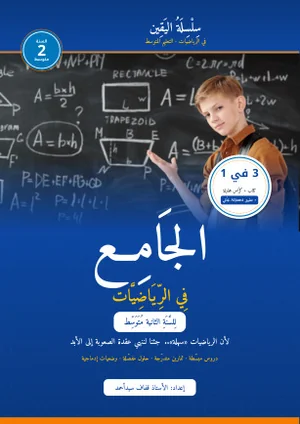
الجامع في الرياضياتالسنة الثانية متوسط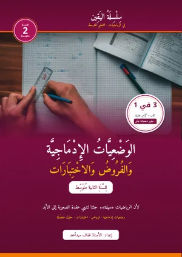
الوضعيات الإدماجية والفروض والاختباراتالسنة الثانية متوسط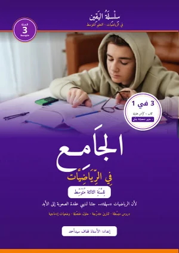
الجامع في الرياضياتالسنة الثالثة متوسط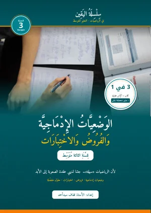
الوضعيات الإدماجية والفروض والاختباراتالسنة الثالثة متوسط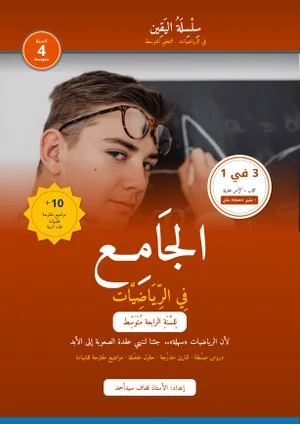
الجامع في الرياضياتالسنة الرابعة متوسط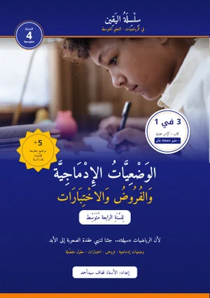
الوضعيات الإدماجية والفروض والاختباراتالسنة الرابعة متوسط